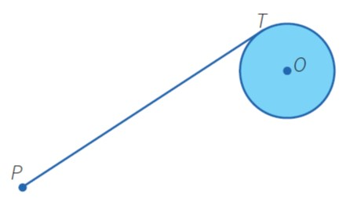

|

|
Para resolver este problema, se supone que se debe hallar la
tangente a una circunferencia, trazada desde un punto exterior a ella.
- El punto T es de tangencia. Entonces, ¿qué relación
existe entre la tangente y algún elemento
de la circunferencia? ¿Hay algún teorema que
los relacione?
- Existe un teorema que nos dice que el radio es
perpendicular a la tangente en el punto de tangencia.
- Por tanto, si unimos O con T, tendremos que OT
es perpendicular a PT.
- Además, como tenemos tres puntos involucrados, P, T y O, es posible
hacer un triángulo uniendo el punto P con el punto O. Se observa que el
triángulo es rectángulo.
|